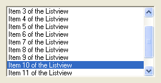

ListViewGadget()
Syntax
Result = ListViewGadget(#Gadget, x, y, Width, Height [, Flags])Description
Creates a ListView gadget in the current GadgetList.
Parameters
#Gadget A number to identify the new gadget. #PB_Any can be used to auto-generate this number. x, y, Width, Height The position and dimensions of the new gadget. Flags (optional) Flags to modify the gadget behavior. It can be a combination of the following values: #PB_ListView_Multiselect: allows multiple items to be selected #PB_ListView_ClickSelect: allows multiple items to be selected. clicking on one item selects/deselects it (on OS X, same behaviour as #PB_ListView_Multiselect)
Return value
Returns nonzero on success and zero on failure. If #PB_Any was used as the #Gadget parameter then the return-value is the auto-generated gadget number on success.
Remarks
A 'mini help' can be added to this gadget using GadgetToolTip().
The following functions can be used to act on the list content:
- AddGadgetItem(): Add an item.
- RemoveGadgetItem(): Remove an item.
- ClearGadgetItems(): Remove all the items
- CountGadgetItems(): Returns the number of items currently in the #Gadget.
- GetGadgetItemData(): Get the value that was stored with the gadget item.
- GetGadgetItemState(): Returns nonzero if the item is selected, zero otherwise.
- GetGadgetItemText(): Get the content of the given item.
- GetGadgetState(): Get the index of the selected item or -1 if there is no selected item.
- GetGadgetText(): Get the content of the selected item.
- SetGadgetItemData(): store a value with the given item.
- SetGadgetItemState(): Selects or deselects the given item.
- SetGadgetItemText(): Set the text of the given item.
- SetGadgetState(): Change the selected item. If -1 is specified, the selection will be removed.
- SetGadgetText(): Selects the item with the given text (the text must match exactly).
This gadget supports the SetGadgetColor() and GetGadgetColor() functions with the following values as 'ColorType':#PB_Gadget_FrontColor: Textcolor #PB_Gadget_BackColor : BackgroundcolorThe following events are supported through EventType():#PB_EventType_LeftClick #PB_EventType_LeftDoubleClick #PB_EventType_RightClick
Example
If OpenWindow(0, 0, 0, 270, 140, "ListViewGadget", #PB_Window_SystemMenu | #PB_Window_ScreenCentered) ListViewGadget(0, 10, 10, 250, 120) For a = 1 To 12 AddGadgetItem (0, -1, "Item " + Str(a) + " of the Listview") ; define listview content Next SetGadgetState(0, 9) ; set (beginning with 0) the tenth item as the active one Repeat : Until WaitWindowEvent() = #PB_Event_CloseWindow EndIf

See Also
AddGadgetItem(), RemoveGadgetItem(), ClearGadgetItems(), CountGadgetItems(), GetGadgetState(), SetGadgetState(), GetGadgetText(), SetGadgetText(), GetGadgetItemState(), SetGadgetItemState(), GetGadgetItemText(), SetGadgetItemText(), GetGadgetItemData(), SetGadgetItemData(), GetGadgetColor(), SetGadgetColor(), ListIconGadget()
Supported OS
All